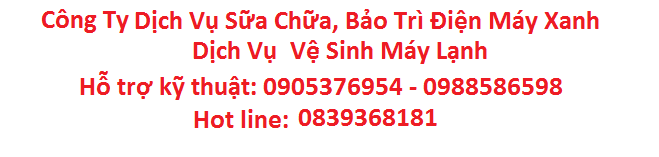

Quý Khách Vui Lòng Tham Khảo Bảng Giá Dịch Vụ Xin Cảm Ơn.
| Tên dịch vụ | Phí dịch vụ |
| Nạp gas máy lạnh R22 | 100.000/10psi đo bằng đồng hồ chuyên dụng |
| Nạp gas máy lạnh R410 – R32 | 120.000/10psi đo bằng đồng hồ chuyên dụng |
| Vệ sinh máy lạnh 1.0 – 2.0hp | 100.000-150.000 tuỳ vào số lượng địa điểm |
| Vệ sinh máy lạnh tủ đứng – âm trần 2.0-5hp | 250.000 – 350.000 |
| Vệ sinh máy lạnh bằng dung dịch diệt khuẩn | 250.000/Máy dung dich diệt khuẩn A-400 COIL KLEEN Dành Cho Dàn Lạnh Bị Đen Hôi Dầu Mỡ Bám Dính (Đã Lâu Không Vệ Sinh) |
| Vệ sinh phải tháo xuống 1.0 – 2.0hp | 250.000 |
| Xử lý máy lạnh bị chảy nước | 200.000 – 300.000 |
Giá Trên Là Niêm Yết Của Công Ty Quý Khách Không Hài Lòng Dịch Vụ Xin Liên Hệ 028.3860.0621 Xin Cảm Ơn.
Vệ sinh máy lạnh rất cần thiết để mang lại nguồn không khí trong lành cho ngôi nhà của bạn và đáp đứng nhu cầu sử dụng máy lạnh của mọi thành viên trong gia đình bạn. Khi máy lạnh của bạn hoạt động kém lạnh, nước chảy từ máy lạnh ra và có mùi hôi thì đây chính là lúc bạn cần vệ sinh máy lạnh.
Máy lạnh dường như là vật dụng không thể thiếu trong mỗi gia đình hiện đại. Nhưng nhiều khi chúng ta không hề quan tâm đến cơ chế hoạt động của máy. Chính sự vô tâm ấy, tạo điều kiện cho bụi bẩn trong không khí có cơ hội làm hạn chế công năng của máy móc bên trong, giảm tuổi thọ của sản phẩm.
Dàn trao đổi nhiệt, các tấm lưới chắn, dàn lạnh, dàn nóng là những bộ phận chịu ảnh hưởng trực tiếp từ môi trường, tuy nhiên để vệ sinh chúng đúng kĩ thuật, tránh những sơ suất trong quá trình tháo lắp vệ sinh thì bạn nên tìm đến dịch vụ vệ sinh máy lạnh chuyên nghiệp.
Lợi ích của việc thường xuyên vệ sinh máy lạnh
- Sức khoẻ: Đặc trưng của dàn lạnh là luôn ẩm ướt trong quá trình sử dụng cho nên rất dễ hình thành những loại vi khuẩn có hại về đường hô hấp, những vi khuẩn này sẽ theo quá trình sử dụng lan ra ngoài không khí, ảnh hưởng trực tiếp đến sức khỏe của chúng ta.
- Tiết kiệm: Một chiếc máy lạnh không được vệ sinh đúng cách, đúng chu kỳ sẽ ảnh hưởng đến khả năng trao đổi nhiệt, máy sẽ phải làm việc liên tục để đạt được nhiệt độ mong muốn, tiêu tốn điện năng sử dụng cũng như khiến cho tuổi thọ máy giảm xuống. Sau một thời gian dài chúng ta sẽ phải tốn chi phí rất nhiều cho tiền điện, tiền sửa chữa…
- Tránh sự cố ngoài ý muốn: Dịch vụ vệ sinh máy lạnh chuyên nghiệp sẽ giúp bạn yên tâm hơn về chất lượng quy trình, ngoài ra chúng tôi sẽ giúp khách hàng phát hiện khắc phục ngay các sự cố dù là nhỏ nhất cho quý khách hàng.
Dịch vụ vệ sinh máy lạnh của chúng tôi được thực hiện theo quy trình chuẩn kỹ thuật:
- Kiểm tra hoạt động của tòan bộ máy lạnh, kiểm tra nguồn điện
- Vệ sinh dàn lạnh bằng cách tháo mặt nạ, xịt rửa máy lạnh bằng motor cao áp, vệ sinh ống thoát nước, máng nước, tránh để nước vào board mạch.
- Vệ sinh dàn nóng tháo vỏ máy lạnh dùng motor cao áp xịt rửa dàn ngưng tụ, cánh quạt, kiểm tra và nạp gas máy lạnh
- Lắp máy lạnh lại cho chạy kiểm tra tầm 15 phút, lập phiếu thu và bàn giao cho khách hàng
- Đặc biệt : Khách hàng có thể gọi điện đến trung tâm CSKH của chúng tôi để phản hồi 24/7 về chất lượng dịch vụ.
Chu kì vệ sinh máy lạnh tốt nhất:
- Theo các nhà sản xuất, thời gian vệ sinh máy lạnh sẽ tùy thuộc vào mức độ sử dụng và môi trường bên ngoài
- Đối với máy lạnh gia đình, vệ sinh máy nên từ 3 – 4 tháng/lần
- Đối với nhà hàng, cơ quan, việc vệ sinh khoảng 3 tháng/lần
- Đối với nhà máy – xí nghiệp sản xuất, vệ sinh máy khoảng 1 tháng/lần
Rất nhiều khách hàng lựa chọn dịch vụ vệ sinh máy lạnh của chúng tôi vì:
- Chúng tôi kinh nghiệm nhiều năm trong lĩnh vực lắp đặt và bảo trì cơ điện
- Đội ngũ nhân viên kỹ thuật chuyên nghiệp, trung thực, được cấp phép và được bảo hiểm đầy đủ
- Đội ngũ CSKH tậm tình và luôn lắng nghe tiếp thu, có hỗ trợ nhanh chóng ngay sau khi nhận được ý kiến phản hồi của khách hàng.
***Cho dù bạn chọn phương pháp tại nhà với sự trợ giúp của các nhân viên kĩ thuật hay đưa đến trung tâm bảo hành đi nữa thì việc vệ sinh đem lại nhiều lợi ích cho bạn và gia đình. Bạn có thể bảo dưỡng chiếc máy lạnh yêu quý tốt nhất, tiết kiệm hóa đơn tiền điện hàng tháng, tránh các sự cố về điện đáng tiếc và đặc biệt là giảm nguy cơ về bệnh hô hấp cho các bé ở nhà và đem lại sức khỏe tốt nhất cho gia đình.